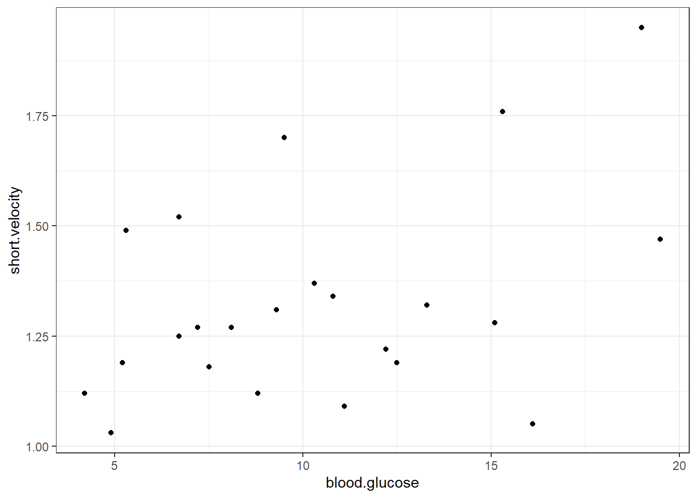

9 Continuous by Categorical
9.1 Fit MLR Model
Question: Did weight loss depend on gender?
fit_lm_loss_gen <- lm(loss ~ gender,
data = data_clean)summary(fit_lm_loss_gen)##
## Call:
## lm(formula = loss ~ gender, data = data_clean)
##
## Residuals:
## Min 1Q Median 3Q Max
## -27.067 -11.788 -2.156 9.977 44.222
##
## Coefficients:
## Estimate Std. Error t value Pr(>|t|)
## (Intercept) 10.1129 0.6650 15.206 <2e-16 ***
## genderFemale -0.1842 0.9405 -0.196 0.845
## ---
## Signif. codes: 0 '***' 0.001 '**' 0.01 '*' 0.05 '.' 0.1 ' ' 1
##
## Residual standard error: 14.11 on 898 degrees of freedom
## Multiple R-squared: 4.271e-05, Adjusted R-squared: -0.001071
## F-statistic: 0.03835 on 1 and 898 DF, p-value: 0.8448Answer:The main effect of gender is not significant.
Question: Does gender moderate the effect of spending addition time on the program? (ignoring the role of effort and program type for the time being)
fit_lm_loss_hrs_gen <- lm(loss ~ hours*gender,
data = data_clean)summary(fit_lm_loss_hrs_gen)##
## Call:
## lm(formula = loss ~ hours * gender, data = data_clean)
##
## Residuals:
## Min 1Q Median 3Q Max
## -27.118 -11.350 -1.963 10.001 42.376
##
## Coefficients:
## Estimate Std. Error t value Pr(>|t|)
## (Intercept) 6.906 2.805 2.462 0.014 *
## hours 1.591 1.352 1.177 0.240
## genderFemale -3.571 3.915 -0.912 0.362
## hours:genderFemale 1.724 1.898 0.908 0.364
## ---
## Signif. codes: 0 '***' 0.001 '**' 0.01 '*' 0.05 '.' 0.1 ' ' 1
##
## Residual standard error: 14.06 on 896 degrees of freedom
## Multiple R-squared: 0.008433, Adjusted R-squared: 0.005113
## F-statistic: 2.54 on 3 and 896 DF, p-value: 0.05523Answer: No, gender does not interact with time spent.
Question: Is the effect of time spend moderated by type of program?
fit_lm_loss_prog <- lm(loss ~ prog,
data = data_clean)summary(fit_lm_loss_prog)##
## Call:
## lm(formula = loss ~ prog, data = data_clean)
##
## Residuals:
## Min 1Q Median 3Q Max
## -22.4700 -4.6636 -0.0762 4.1810 28.3304
##
## Coefficients:
## Estimate Std. Error t value Pr(>|t|)
## (Intercept) 8.0304 0.4110 19.54 <2e-16 ***
## progSwim 17.7897 0.5813 30.61 <2e-16 ***
## progRead -11.8182 0.5813 -20.33 <2e-16 ***
## ---
## Signif. codes: 0 '***' 0.001 '**' 0.01 '*' 0.05 '.' 0.1 ' ' 1
##
## Residual standard error: 7.119 on 897 degrees of freedom
## Multiple R-squared: 0.7457, Adjusted R-squared: 0.7451
## F-statistic: 1315 on 2 and 897 DF, p-value: < 2.2e-16fit_lm_loss_hrs_prog <- lm(loss ~ hours*prog,
data = data_clean)summary(fit_lm_loss_hrs_prog)##
## Call:
## lm(formula = loss ~ hours * prog, data = data_clean)
##
## Residuals:
## Min 1Q Median 3Q Max
## -24.977 -4.146 -0.213 3.992 25.067
##
## Coefficients:
## Estimate Std. Error t value Pr(>|t|)
## (Intercept) -6.7807 1.6438 -4.125 4.06e-05 ***
## hours 7.4527 0.8053 9.255 < 2e-16 ***
## progSwim 18.9296 2.2877 8.275 4.66e-16 ***
## progRead 8.9970 2.2160 4.060 5.34e-05 ***
## hours:progSwim -0.5787 1.1193 -0.517 0.605
## hours:progRead -10.4089 1.0723 -9.708 < 2e-16 ***
## ---
## Signif. codes: 0 '***' 0.001 '**' 0.01 '*' 0.05 '.' 0.1 ' ' 1
##
## Residual standard error: 6.502 on 894 degrees of freedom
## Multiple R-squared: 0.7885, Adjusted R-squared: 0.7874
## F-statistic: 666.8 on 5 and 894 DF, p-value: < 2.2e-16anova(fit_lm_loss_hrs_prog)## # A tibble: 4 x 5
## Df `Sum Sq` `Mean Sq` `F value` `Pr(>F)`
## <int> <dbl> <dbl> <dbl> <dbl>
## 1 1 1341. 1341. 31.7 2.39e- 8
## 2 2 134281. 67140. 1588. 5.60e-295
## 3 2 5319. 2660. 62.9 2.75e- 26
## 4 894 37795. 42.3 NA NAAnswer: Yes! The type of program does moderate the effect of time spent on weight loss, F(2, 894) = 62.91, p < .001.
9.2 Table Comparing Models
Sometimes its nice to have a table of the parameter estimates of competing models.
texreg::screenreg(list(fit_lm_loss_hr,
fit_lm_loss_gen,
fit_lm_loss_prog,
fit_lm_loss_hrs_gen,
fit_lm_loss_hrs_prog),
custom.model.names = c("Hrs",
"Gender",
"Program",
"Hrs + Gender",
"Hrs + Program"))##
## ==================================================================================
## Hrs Gender Program Hrs + Gender Hrs + Program
## ----------------------------------------------------------------------------------
## (Intercept) 5.08 ** 10.11 *** 8.03 *** 6.91 * -6.78 ***
## (1.96) (0.67) (0.41) (2.81) (1.64)
## hours 2.47 ** 1.59 7.45 ***
## (0.95) (1.35) (0.81)
## genderFemale -0.18 -3.57
## (0.94) (3.91)
## progSwim 17.79 *** 18.93 ***
## (0.58) (2.29)
## progRead -11.82 *** 9.00 ***
## (0.58) (2.22)
## hours:genderFemale 1.72
## (1.90)
## hours:progSwim -0.58
## (1.12)
## hours:progRead -10.41 ***
## (1.07)
## ----------------------------------------------------------------------------------
## R^2 0.01 0.00 0.75 0.01 0.79
## Adj. R^2 0.01 -0.00 0.75 0.01 0.79
## Num. obs. 900 900 900 900 900
## ==================================================================================
## *** p < 0.001; ** p < 0.01; * p < 0.059.3 Check Assumptions
par(mfrow = c(2, 2))
plot(fit_lm_loss_hrs_prog)
par(mfrow = c(1, 1))9.4 Plot Estimated Marginal Means
fit_lm_loss_hrs_prog %>%
interactions::interact_plot(pred = hours,
modx = prog,
interval = TRUE,
int.type = "confidence",
legend.main = "Program:") +
theme_bw() +
theme(legend.background = element_rect(color = "black"),
legend.position = c(0, 1),
legend.justification = c(-0.1, 1.1),
legend.key.width = unit(2, "cm")) +
labs(x = "Time Spend on Program, hours",
y = "Weight Loss, pounds",
caption = "Note. Bands represent 95% confidence intervals") +
geom_hline(yintercept = 0)
9.5 Predict and Pairwise Tests
fit_lm_loss_hrs_prog %>%
emmeans::emmeans(~hours)## NOTE: Results may be misleading due to involvement in interactions## hours emmean SE df lower.CL upper.CL
## 2 10.1 0.217 894 9.69 10.5
##
## Results are averaged over the levels of: prog
## Confidence level used: 0.95fit_lm_loss_hrs_prog %>%
emmeans::emmeans(~ prog)## NOTE: Results may be misleading due to involvement in interactions## prog emmean SE df lower.CL upper.CL
## Jog 8.14 0.376 894 7.41 8.88
## Swim 25.91 0.376 894 25.18 26.65
## Read -3.70 0.376 894 -4.44 -2.97
##
## Confidence level used: 0.95fit_lm_loss_hrs_prog %>%
emmeans::emmeans(~ hours|prog)## prog = Jog:
## hours emmean SE df lower.CL upper.CL
## 2 8.14 0.376 894 7.41 8.88
##
## prog = Swim:
## hours emmean SE df lower.CL upper.CL
## 2 25.91 0.376 894 25.18 26.65
##
## prog = Read:
## hours emmean SE df lower.CL upper.CL
## 2 -3.70 0.376 894 -4.44 -2.97
##
## Confidence level used: 0.95fit_lm_loss_hrs_prog %>%
emmeans::emmeans(~ hours|prog,
at = list(hours = 1:4))## prog = Jog:
## hours emmean SE df lower.CL upper.CL
## 1 0.672 0.879 894 -1.05 2.398
## 2 8.125 0.376 894 7.39 8.862
## 3 15.578 0.898 894 13.82 17.340
## 4 23.030 1.664 894 19.77 26.296
##
## prog = Swim:
## hours emmean SE df lower.CL upper.CL
## 1 19.023 0.855 894 17.34 20.702
## 2 25.897 0.375 894 25.16 26.634
## 3 32.771 0.871 894 31.06 34.481
## 4 39.645 1.608 894 36.49 42.801
##
## prog = Read:
## hours emmean SE df lower.CL upper.CL
## 1 -0.740 0.821 894 -2.35 0.871
## 2 -3.696 0.376 894 -4.43 -2.958
## 3 -6.652 0.782 894 -8.19 -5.117
## 4 -9.608 1.444 894 -12.44 -6.775
##
## Confidence level used: 0.959.6 Simple Slopes Analysis
fit_lm_loss_hrs_prog %>%
interactions::sim_slopes(pred = hours,
modx = prog)## Warning: Johnson-Neyman intervals are not available for factor moderators.## SIMPLE SLOPES ANALYSIS
##
## Slope of hours when prog = Read:
##
## Est. S.E. t val. p
## ------- ------ -------- ------
## -2.96 0.71 -4.18 0.00
##
## Slope of hours when prog = Swim:
##
## Est. S.E. t val. p
## ------ ------ -------- ------
## 6.87 0.78 8.84 0.00
##
## Slope of hours when prog = Jog:
##
## Est. S.E. t val. p
## ------ ------ -------- ------
## 7.45 0.81 9.25 0.00Interpretation: Participants in the jogging program (M = 7.45 lb/hr, SE = 0.81) and the swimming program (M = 6.87 lb/hr, SE = 0.78), loose about the same amount of weight for each additional hour spent exercising, p = .863, conversely, each additional hour reading is associated with more weight gained (M = -2.96 lb/hr, SE = 0.71).